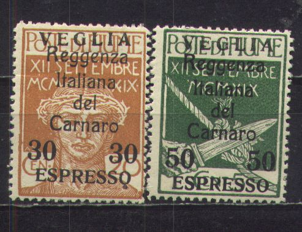
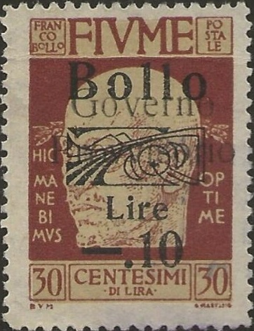

{kind=link}

Return To Catalogue - Fiume, general issues, part 1 - Fiume, stamps of Hungary overprinted - Italy - Arbe and Veglia
Note: on my website many of the
pictures can not be seen! They are of course present in the
catalogue;
contact me if you want to purchase the catalogue.
25 c + 2 L blue Overprinted 'Valore globale' and surcharged
25 c on 25 c + 2 L blue
5 c green and yellow 10 c red and yellow 15 c grey and yellow 20 c orange and yellow 25 c blue and yellow 30 c brown and yellow 45 c olive and yellow 50 c violet and yellow 55 c brown and yellow 1 L black and yellow 2 L lilac and yellow 3 L green and yellow 5 L brown and yellow 10 L grey and yellow Overprinted "Governo Provvisorio" (1921)


5 c green and yellow 10 c red and yellow 15 c grey and yellow 20 c orange and yellow 25 c blue and yellow 30 c brown and yellow 45 c olive and yellow 50 c violet and yellow 55 c brown and yellow 1 L on 30 c brown 1 L black and yellow 2 L lilac and yellow 3 L green and yellow 5 L brown and yellow 10 L grey and yellow
I've seen these stamps overprinted with "BOLLO" and further surcharged. They are fiscal stamps.

Deceptive forgeries of these stamps exist. I presume the next stamp is such a forgery, the 'O' of 'POSTALE" is much more elliptic than in the genuine stamps. These forgeries exist with overprint 'Governo Provvisorio'.

Forgery?

5 c green 10 c red 20 c orange 25 c blue Overprinted 'Reggenza Italiana del Carnazo'

1 on 5 c green 2 on 25 c blue (overprint red) 5 c green 10 c red 15 on 10 c red 15 on 20 c orange 15 on 25 c blue (overprint red) 20 c orange 25 c blue (overprint red or black) 25 on 10 c red 50 on 20 c orange 55 on 5 c green 1 L on 10 c red 1 L on 25 c blue (overprint red) 2 L on 5 c green 5 L on 10 c red 10 L on 20 c orange
Overprinted 'Reggenza Italiana del Carnazo' and overprinted "ESPRESSO"

30 on 20 c orange 50 on 5 c green
Some of these stamps were overprinted with 'ARBE' or 'VEGLIA', click here for more information.
A fiscal stamp with overprint "Tassa passaporti":

Forgeries (at least two different sets) exist of the above stamps (including overprints).
(Reduced size)
Ship 5 c green 10 c violet 15 c brown Gate 20 c red 25 c grey 30 c green Woman figure 50 c blue 60 c red 1 L blue Pillar 2 L brown 3 L olive 5 L brown Overprinted "ANNESSIONE ALL'ITALIA" (1924)
5 c green 10 c violet 15 c brown 20 c red 25 c grey 30 c green 50 c blue 60 c red 1 L blue 2 L brown 3 L olive 5 L brown Oveprinted 'REGNO D'ITALIA' (1924)
5 c green 10 c violet 15 c brown 20 c red 25 c grey 30 c green 50 c blue 60 c red 1 L blue 2 L brown 3 L olive 5 L brown
Two types of forgeries exist of the ship and gate design (possibly also of the other types). If anybody has more information, please contact me!

3 L forgery, if I'm well informed the 'O' of 'POSTE' is more like
an ellipse in this forgery and this is the case for a whole set
of forgeries (all values in all designs including forged
overprints).
Most likely these forgeries were made by the forger Imperato (see V.E.Tyler, Focus on Forgeries). A forgery of the ship design is described in Tyler's book.

2 c brown
1 c green

30 c grey 50 c red Overprinted "Governo Provvisorio" (1921)
30 c grey 50 c red
Forgeries exist of these stamps (including overprints). The head of the person under the 'E' of 'FIUME' clearly printed in the genuine stamps, it is blur in the forgeries.
60 c red 2 L blue Overprinted 'ANNESSIONE ALL'ITALIA' (1924) 60 c red 2 L blue Overprinted 'REGNO D'ITALIA' (1924) 60 c red 2 L blue

2 c brown 5 c brown


Genuine stamp, front and backside, the backside also has a
pattern printed on it together with three lines of 'POSTA DI
FIUME'
0.02 on 15 c 0.04 on 10 c 0.05 on 25 c 0.06 on 20 c 0.10 on 20 c 0.20 on 45 c 0.30 on 1 cor 0.40 on 80 c 0.50 on 60 c 0.60 on 45 c 0.80 on 45 c 1.00 on 2 cor


Postage stamps overprinted "Bollo".
Postage stamp overprinted "Tassa passaporti"

Fiscal stamps of Hungary with "1914" overprinted
"FIUME" and stars on top. Some 'misprints' exist with
the one of the stars on top rotated a bit.
In this "1914" design I have seen:
Crown design: 6 f brown and grey, 10 f green and grey
Horse and rider facing the left: 14 f green and light blue, 24 f
orange and grey, 26 f violet and yellow, 30 f blue and yellow
Horse and rider facing the right: 38 f green and red, 64 f violet
and yellow
Knight: 1 K 26 f brown and grey, 1 K 75 f violet and red, 1 K 88
f brown and lilac
"FIUME" and stars on fiscal stamps of Hungary with
"1900" inscription
Briefmarken - Timbres-Poste - Stamps
{kind=link}
{kind=link}